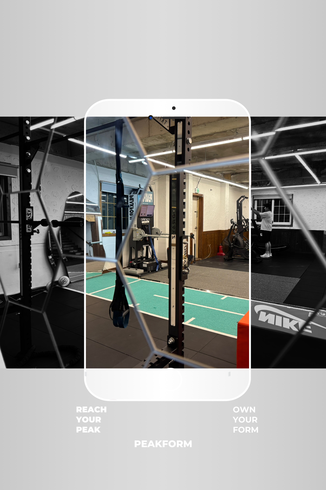

PEAKFORM TRAINING
최고의 순간을 위한,
나만의 움직임.
선수의 경기력부터 일상의 움직임까지.
시즌과 몸의 상태를 함께 살피는 피크폼 트레이닝 시스템.
REACH YOUR PEAK, OWN YOUR FORM
PERFORMANCERECOVERYMOVEMENTPEAKFORM
THE PEAKFORM APPROACH
몸을 이해하고,
목표에 맞게 움직입니다.
최고의 퍼포먼스에 도달하는 것.
그리고 스스로의 폼을 갖는 것.
피크폼은 시즌의 경기력과 매일의 움직임을 함께 봅니다. 현재의 기능과 컨디션을 확인하고, 필요한 훈련과 회복을 연결합니다.
트레이닝 시스템 보기TRAIN WITH YOUR SEASON
시즌이 달라지면,
훈련의 목적도 달라집니다.
시즌 계획과 경기 일정에 맞춰 훈련의 강도와 양을 조절합니다.
한 번의 기록을 넘어,
시즌 전체의 경기력을 생각합니다.
공간 운영 개념도
TWO FLOORS, ONE SYSTEM
훈련에서 회복까지.
하나의 흐름으로.
1F
스포츠 퍼포먼스 존
근력 · 파워 · 스피드 · 팀 트레이닝
2F
공간 운영 살펴보기리커버리 존
기능 회복 · 보강운동 · 컨디셔닝
PEAKFORM JOURNAL
움직임을 쌓는 이야기.
OUR NEXT CHAPTER
피크폼의 이야기가 이곳에 쌓입니다.
트레이닝 현장과 새로운 소식을 전하겠습니다.